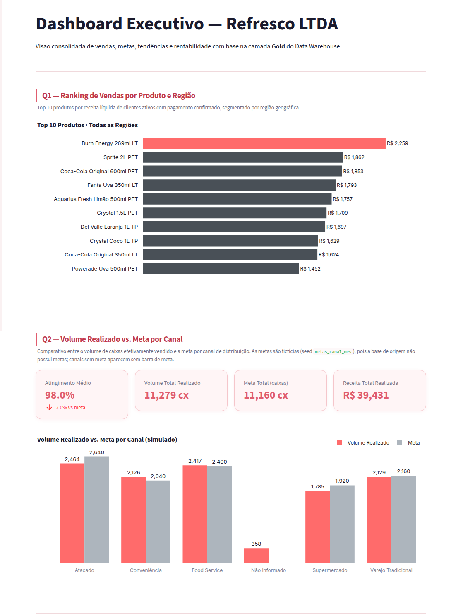
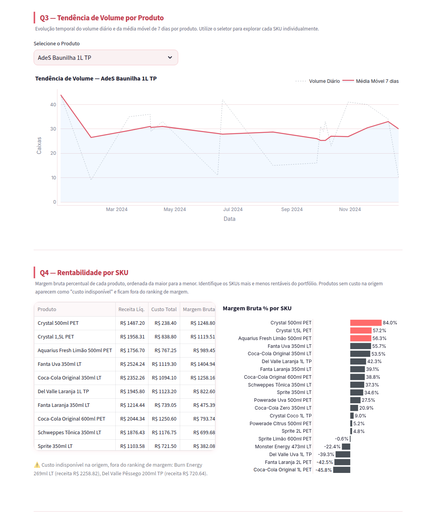
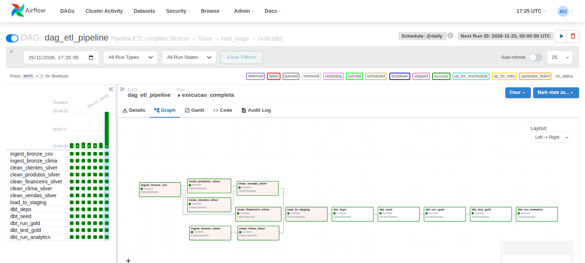

Contexto
Pipeline de dados de vendas ponta a ponta para uma distribuidora de bebidas do Triângulo Mineiro. Ele transforma vendas, clientes, produtos, financeiro e o clima diário de Uberlândia (Open-Meteo) em um data warehouse dimensional. O foco não é só fazer o dado chegar, e sim garantir que chegue confiável: nada é descartado em silêncio, o reprocessamento é idempotente e qualquer refactor que altere um dado reprova no teste e2e.
Os dados são sintéticos e as metas por canal são fictícias, então os números do dashboard são ilustrativos.


Fluxo da arquitetura
A DAG dag_etl_pipeline (13 tasks) separa as camadas: Bronze é cópia fiel da origem em UTF-8, particionada pela data lógica; Silver limpa, valida e faz merge com o estado atual, com escrita atômica, quarentena e auditoria por task; o load faz TRUNCATE + COPY em uma transação; e a Gold é construída pelo dbt, que roda em container efêmero via DockerOperator.
Orquestração
clean_vendasdepende de clientes e produtos, porque faz a validação referencial contra os cadastros já limposload_to_stagingcarrega todas as tabelas deload_stageem uma única transação, e as viewsstg_*sobrevivem à carga- Sequência dbt:
dbt_deps→dbt_seed→dbt_run_gold→dbt_test_gold→dbt_run_analytics; se um teste com severidadeerrorfalhar, as views analíticas não são atualizadas - Reprocessamento por data com
airflow dags backfill, de forma idempotente

Modelagem dimensional (Star Schema)
A camada Gold materializa, via dbt, um esquema estrela no PostgreSQL: uma tabela fato de vendas (grão: uma linha por venda) conectada a quatro dimensões (cliente, produto, tempo e representante) e ao seed de regras de lançamento. O seed metas_canal_mes (metas fictícias) se liga a dim_cliente pelo canal. As chaves substitutas (sk_*) são hashes MD5 estáveis entre execuções, e receita, custo e margem já vêm calculados. A fato_vendas é incremental por mudança (merge com janela de lookback de 30 dias), e as dimensões são SCD tipo 1.
Regras de negócio
Cada venda tem no máximo um lançamento financeiro, então o tipo do lançamento classifica a venda. A regra mora em um seed (regra_tipo_lancamento), sem listar tipos em SQL, e só entram vendas com status = PAGO.
- VENDA: conta em receita e volume
- BONIFICACAO: entregue sem cobrança, conta no volume e no custo, mas não na receita
- DEVOLUCAO, AJUSTE e OUTRO: não contam em receita nem em volume
- Margem bruta: receita de VENDA menos custo de VENDA e BONIFICACAO; produtos sem custo na origem ficam fora do ranking de margem
Quatro views analíticas alimentam o dashboard: ranking de produtos por região, volume vs. meta por canal, tendência de volume com média móvel de 7 dias e margem bruta por produto.
Qualidade de dados
Todo registro rejeitado vai para silver/_quarentena/<entidade>/<data> com o motivo da rejeição, e a tabela audit.dq_results registra o que cada execução leu, aprovou, duplicou e rejeitou. Na carga de referência:
- Vendas: 3.508 lidas, 3.482 aprovadas, 8 duplicadas, 18 rejeitadas
- Clientes: 120 lidos, 115 aprovados, 5 rejeitados
- Financeiro: 2.464 lidos, 2.454 aprovados, 10 rejeitados
- Produtos e clima: 25 e 2.192 registros, todos aprovados
Na Gold, 78 testes dbt (relationships, not_null, unique, accepted_values e um teste singular garantindo que todo dia com venda tem clima) travam as views analíticas quando falham.
Testes e CI
- 299 testes unitários e de integração com gate de cobertura, mais lint com ruff
- Teste e2e que roda o pipeline em dois dias com dados alterados, reexecuta, faz backfill fora de ordem e compara 31 datasets com um baseline versionado: se um refactor mudar um dado, ele reprova
- CI no GitHub Actions rodando lint, testes e e2e a cada push
Diferenciais técnicos
- Arquitetura Bronze, Silver e Gold com responsabilidades bem separadas, escrita atômica na Silver e reprocessamento idempotente
- Quarentena com motivo e auditoria por execução, em vez de descarte silencioso
- Regras de negócio versionadas em seeds do dbt, e fato incremental por mudança com
merge - Execução isolada do dbt via
DockerOperator, desacoplando a transformação da orquestração - Validação por baseline: 31 datasets comparados no e2e a cada push
Limitações e próximos passos
- O merge da Silver nunca apaga: uma linha que some da origem permanece
- Mudanças em dimensões (ex.: custo de produto) só chegam às vendas dos últimos 30 dias, a menos que se use
--full-refresh - O clima vem de uma única coordenada (Uberlândia) para as quatro mesorregiões
docker.sockmontado no Airflow: aceitável apenas em ambiente local- Backlog:
dim_representantecom uma linha por representante, fato de lançamentos financeiros, SCD tipo 2 para clientes, alertas no Airflow e contratos de dados